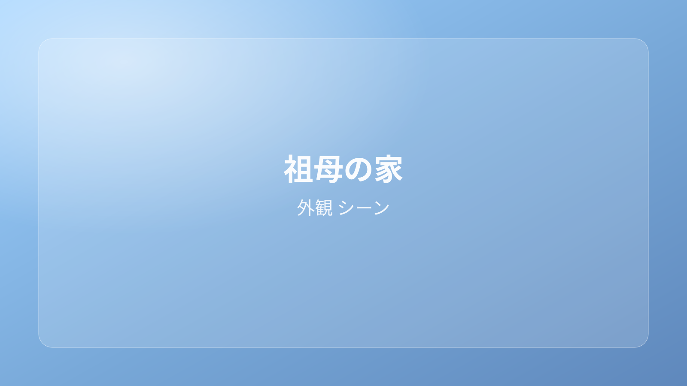

祖母の家
Grandma's House
昭和の暮らしの温度を残した祖母の家を、VRChatでゆっくり過ごせるワールドとして再構成しました。 柔らかい光と木の質感に包まれながら、会話・撮影・小休憩を自然に楽しめます。
※ VRChatリンクはログイン状態のブラウザで開いてください。
作品概要
「祖母の家」は、静かな午後の空気や生活の痕跡を丁寧に重ねた、滞在体験重視のVRChatワールドです。 眺めるだけでなく、腰を下ろして過ごしたくなる距離感を大切にしています。
見どころ
- 木漏れ日が差し込む縁側と庭の奥行き
- 和室・台所・玄関それぞれの生活感ある質感設計
- 撮影にも会話にも使いやすい光量バランス
こんな方におすすめ
- 落ち着いたワールドでのんびり過ごしたい方
- 和風・ノスタルジー系の撮影スポットを探している方
- 少人数で会話しやすい空間を求めている方
「あの頃の、やさしい時間をもう一度。」
仕様情報
- ポリゴン数
- 約 1.2M（ワールド全体）
- 容量
- 約 118MB（Windows）
- 対応環境
- VRChat PC
- 推奨環境
- VRAM 6GB 以上 / 16GB RAM 以上
- 更新日
- 2026-04-24
- 制作ソフト
- Unity / Blender
内容物
- WorldScene.unity
- Prefab（室内・庭・小物）
- Material / Texture（木材・障子・庭素材）
- Lighting設定・PostProcess設定
利用について
- ワールド内撮影画像のSNS投稿は歓迎です。
- 再配布・無断改変・なりすまし公開はご遠慮ください。
- クレジット表記は「naochan world」でお願いします。